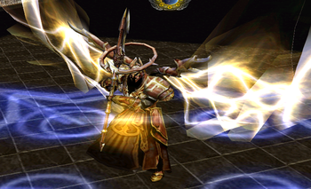

사미엘에서의 슈터
사미엘에서는 신경쓸게 많습니다. 만약 지슈터를 키우고 있으면 딜보다는 보조하는데에 신경을 많이 써주세요.
1~2개 드론만 붙여주시고, 하나는 자신에게 남겨주세요. 섬멸걸린 대상에게 프로브를 붙여주세요( 타겟이 변하면, 대상에게 붙여주시면 됩니다). 2번째 프로브는 근접에게 붙여주시면 됩니다.
가능하다면 섬멸걸린 대상에게 w를 써주세요. 맨처음 두줄기를 피하면 나머지를 피하는데 도움이 됩니다.
근접이 구슬을 먹을수있도록 W를 써주세요.
사라져라에 W를 쓰는건 낭비입니다.
크림슨스타를 갖고있으면 , Q는 데미지보다는 힐하는데 써주세요.
크림슨스타를 갖고있으면 , Q는 데미지보다는 힐하는데 써주세요